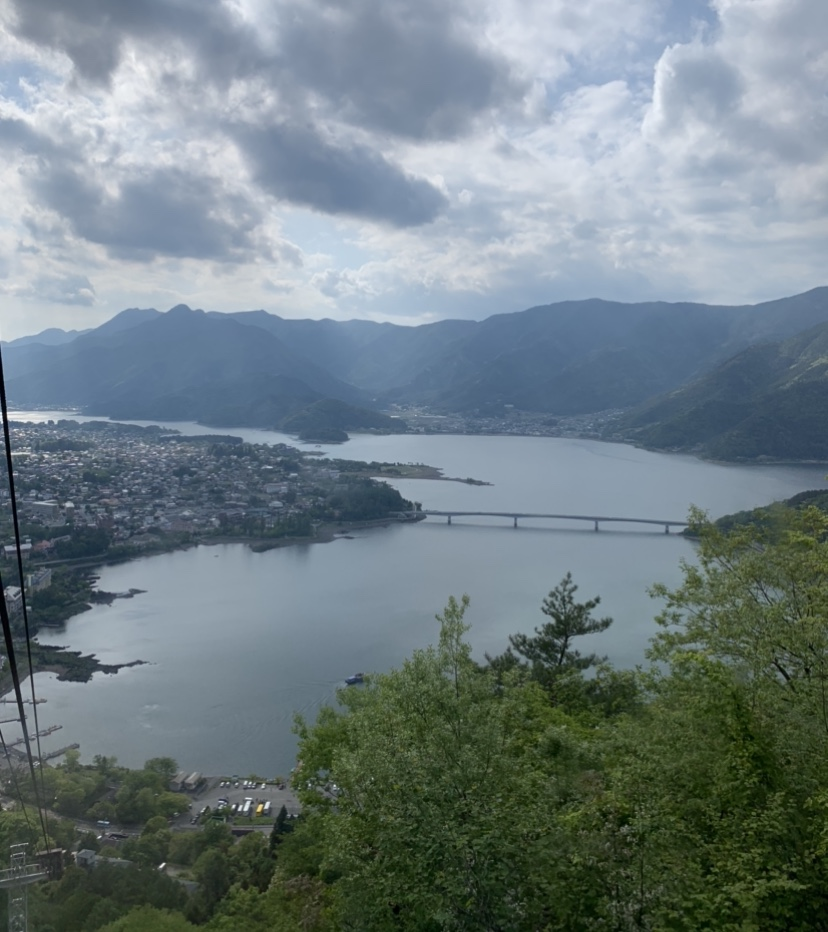

We went on a 40-day trip to Japan and China after I graduated last year. It had always been my dream to visit Japan and I hadn’t visited China since I was 2 years old, so you can assume I was pretty ecstatic!
A little bit of background, I had never gone on an international trip besides my parents sending me to China when I was a baby to be taken care of by my grandparents. This meant I had a chance to experience applying for my passport, getting a visa for China, and planning a whole international trip for the first time in my life.
Overall, it was an interesting experience, especially since I hadn’t been familiar with how expensive international flights were, let alone some of the experiences we had planned for Japan.
Important things to note when visiting Tokyo:
✧ We did not go through any tour guides and some of the places we visited were pricier than we would normally pay for but we figured we don’t travel to Tokyo every day so we made the most out of our experiences (of course I had to come to terms with this in my own way too haha).
✧ When you use a card to pay for anything, it may prompt you to choose to pay in yen or your country’s currency. Always choose yen because the exchange rate charged is set by your bank. If you choose your currency, each individual store can choose their own conversion rate, which will almost always be negative for you!
✧ We also bought a SIM card online after browsing some on the TokyoCheapo’s blog.
✧ Many people in Japan are used to seeing tourists so don’t be nervous to ask for help using Google Translate!
✧ Many places need reservations for tickets ahead of time since they are popular tourist sites and for those without reservations, you may have to schedule time for waiting in your itinerary.
✧ Keep weather in mind when visiting the outdoor attractions, we were lucky enough that it didn’t rain too much while we were there but it may be different in the Spring/Fall.
✧ Bring sunscreen everywhere and apply generously! I had some pretty intense sunburns on my shoulders and back. I never got sunburned in the states (I’m from Philadelphia, PA) no matter how bright it was or how long I stayed in the sun. The sun in Asia is much more intense so I would suggest wearing sunblock even if the sun isn’t out. Now I understand why many Asians use an umbrella under the sun, it’s actually pretty intense!
✧ You may run out of cash in Japan, most 7-11s will allow you to withdraw cash from your debit card but there is a fee. It may cost a lot so bring as much cash as you deem safe before you arrive in Japan.
With that said, let’s get into it! (✿◠‿◠)
On our 13-hour flight including our first stop in Canada!Today’s blog post will be focused mainly on our first destination in Asia: Tokyo, Japan. FYI: We were on this trip from May 13 through June 23 and my boyfriend was my travel mate!
We landed in Haneda International Airport around 5pm and headed straight to our hotel, the APA Hotel Pride Kokkaigijidomae. The hotel had a beautiful interior and being the travel beginners that we were, we assumed the online price we booked for ($150) was the total price but it was actually the price per-night.
APA Hotel, Tokyo, JapanNot gonna lie, this started our trip with some financial anxiety on my end but in the end the place was beautiful and it was definitely worth the experience since we weren’t living in a fancy hotel everyday.
Jet lagged but excited!Our first meal of Japan was one I would not forget, especially since we had learned the culture the hard way our first day there. We went to a fried cutlet shop a few blocks away from our hotel. The place was pretty busy and we both ordered a cutlet meal.
Our first meal in Tokyo!If you didn’t know, it isn’t abnormal for restaurants to charge the same amount of money for a large side of rice or a small side of rice. So, assuming we were famished after our flight, we both ordered a medium sized rice with medium sized lettuce to go with our meal. After receiving our larger-than-expected portions and eating, we realized we over-ordered.
The restaurant, like many in Japan, did not have carry-out boxes and so we did not finish our food. You could tell everyone in the shop was giving us dirty looks, especially the older customers, most likely whispering something like “Look at these youngsters being ungrateful and not completing their meal”.
And after that we tried to never over-order again, it was a pretty guilt-cultivating experience for both of us. We had a long list of restaurants, cafes, and dessert shops to visit in Tokyo so we didn’t want to order what we couldn’t finish.
The next day, we hit up the following places in our itinerary:
✧ Harajuku Takeshita Street ✧ Harajuku Kawaii Zoo Land (Indoor petting zoo) ✧ Kawaii Monster Cafe ✧ Chiku Chiku Cafe (Hedgehog Cafe) ✧ Tried on Kimonos with Kimono Kawaii in Meiji Shrine and Shibuya Crossing ✧ Robot Restaurant ✧ Almost every vending machine, 7-11, and Lawson (a convenience store) we saw lol
Fulfilling my childhood dream of holding a meerkat! Meiji Shrine, dressed by Kimono KawaiiIt was a pretty packed schedule for us, especially since we were both still jet lagged and were waking up around 3am and not being able to fall back asleep. We didn’t try melatonin or sleeping vitamins since it was still bearable. The hardest thing was being able to stay awake once 5pm or the late afternoon rolled around.
Robot Restaurant - This was one of their outdoor propsNonetheless, the trip must go on! The second day, we visited:
✧ Kanda Myojin Shrine ✧ Maidcafe Maidreamin (Akihabara) ✧ Akiba Fukurou Owl Cafe ✧ Mandarake Anime Shops ✧ Tempura Hisago ✧ Akihabara Gachapon Hall ✧ Ramen Motenashi Kuroki
Holding owls at an owl cafe!So, as you can probably tell, our itinerary consisted of the must-see tourist sites, animals, kawaii food, and weeaboo pitstops haha. Just the way I like it! Another thing to keep in mind is that you will most likely not be as hungry if you’re still jet lagged (and if you tried to stuff as much as possible into your itinerary then you’ll start to really feel it). By day 4 or 5, we were finally starting to feel less like zombies when the sun was at its peak.
Our polaroid souvenirs from the maid cafe in Akihabara A beautiful, well-kept shrine we walked by randomly in a residential areaWe dedicated the next day to Mt. Fuji in all of its glory! We took a bus from Tokyo Station and picked up some breakfast from the convenience store in the station. It was a four hour drive and we arrived around 11am. We got to see a peak of Mt. Fuji before it shied away under the clouds when we actually arrived.
We saw the tip of Mt. Fuji on the bus before the clouds came through!For those of you who want landscape photos of Mt. Fuji, I’d suggest arriving around 7am or 8am on a sunny day, which can be difficult to plan when you’re planning an international trip like this but hopefully it works out!
 There are multiple beautiful lakes surrounding Mt. Fuji, reminding me of Studio Ghibli moviesAfter this, we got on the boat across lake Saiko with beautiful scenic mountain views, hopped on a cable car ropeway to the top of a mountain parallel to Mt. Fuji to get sweeping views of its surroundings, and ate some delicious tempura!
Climbed the steps to the top for an OG pic with the Chureito Pagoda!Of course, we had to climb the 999 steps up to Chureito Pagoda, the most scenic and well-known image of Japan with Mt. Fuji as the background. Pro tip: wear shoes you are comfortable walking in or at least carry a spare!
Also, there are plenty of food stops going up the 999 steps so don’t worry if you didn’t pack a snack for your hike up!
I really loved the area around Mt. Fuji because it had country-side vibes that we didn’t experience yet since landing in Japan. These are the mountain-side small towns that you see in old animes that make you feel nostalgic about life in general haha. I can’t believe we almost didn’t make time for Mt. Fuji but I would definitely recommend it to anyone visiting around Tokyo!
 Peaceful anime countryside vibes surrounding Mt. Fuji
Peaceful anime countryside vibes surrounding Mt. Fuji
The next day, we had slightly aching feet so we did try to take it easy a bit more than our past three days. We also changed hotels to somewhere a little closer to Tokyo DisneySea, which was where we would be staying for the next two nights.
We checked out of APA hotel and stored our luggage in a train station locker (which are very commonly found in most train stations in Tokyo!). We were able to store our huge checked-in luggage bag in a large locker and our carry-on in a smaller one, not sure how common they’re available since there are many travellers in Japan so we may have gotten lucky!
With that said, on our fourth day we went to:
✧ Tokyo Tower & One Piece Attraction ✧ Mugiwara Cafe ✧ Kyu Shiba Rikyu Garden ✧ Atago Jinga Shrine ✧ Teamlab Borderless
We love Teamlab Borderless! It’s basically an art exhibit that comes to life and the art flows openly with the walls, ceilings, and floors of the exhibit. There are many interactive rooms and there are beautiful displays of light and I would recommend it 10/10!!
Teamlab Borderless, Tokyo, JapanTip: If you wear a short or flared skirt to TeamLab, certain rooms have mirrored floors and they will give you a towel like wrap to wear over your skirt!
Every exhibit in Teamlab was a beauty to behold!You may not already know this, but I have been a huge One Piece fan since I was in middle school so this was a dream come true. They have a really cute One Piece attraction where there are games you can play, prizes you can win, and OP-themed food!
Hanging out with my BFFs Luffy & Nami LOLWe went to the Mugiwara Cafe which was a buffet-style restaurant but I think it would have been better to try the actual One Piece Cafe there (we didn’t realize there were two until we finished eating!) This was all located inside Tokyo Tower, which was beautiful from the top skydeck view!
 In Sanji's kitchen in one of the games in the OP attraction!
In Sanji's kitchen in one of the games in the OP attraction!
After we had our fun in the city, we picked up our luggage and took the train to the suburbs of Tokyo, which was closer to DisneySea. We arrived at our hotel in Maihama, which had complimentary breakfast as well as a shuttle to take us walking distance to DisneySea!
Me almost dying over Disney's beautiful scenic areas!DisneySea was the recommended theme park we saw for adults, which was why we decided to choose to go there over DisneyLand. The rides weren’t as intense compared to the ones I experienced in Orlando DisneyWorld but they were still creative and fun! My favorite was the Tower of Terror because I love drops even though I hate heights haha, weird paradox huh?
Funny story: Bowen actually thought it was just a haunted house and didn’t know it was a drop so he didn’t use the bathroom yet. Then after I told him what this was gonna be, we had to ask a staff member to take us to the bathroom, which also allowed us to cut the line when we came back since we were already close to the front when we left to the bathroom. (Please don’t do this just to cut the line if you’re even thinking about it! Just know the option to use the bathroom is there for you, especially since the lines can be long and you never know when you need to use the bathroom).
Views straight out of a fairy tail!We took in the gorgeous scenic views, I have to say that DisneySea looked straight out of a movie or another time era, I was in awe with the architecture. Especially the fact that it is right by the ocean, in certain areas of the park you could see the ocean from the towers and castles.
After a beautiful day in the place where dreams come true, we were off to Kyoto for the next leg of our Japan adventures!
Shinkansen to our next destination: Kyoto!